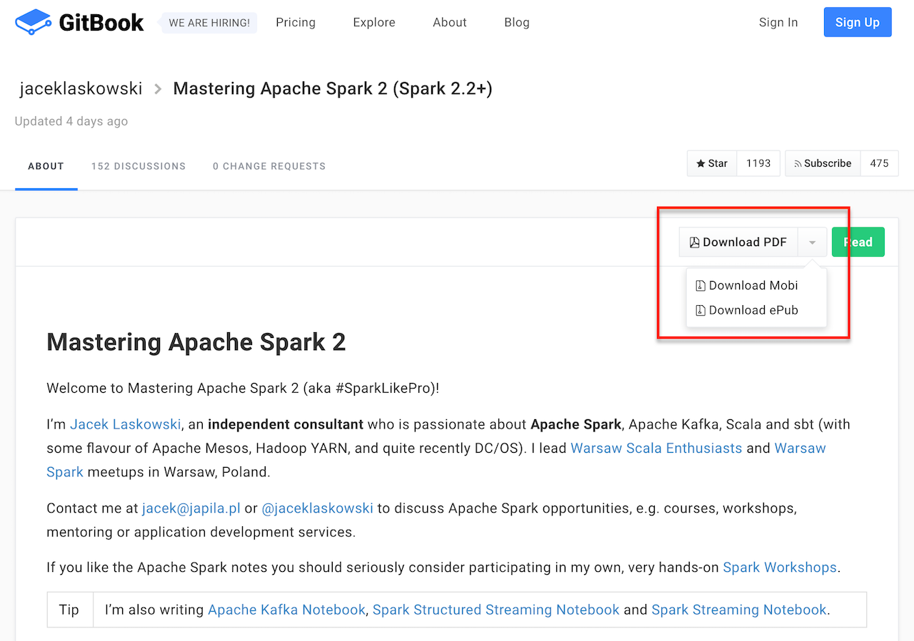

From Basic to Advanced Aggregates
Spark SQL & "Spark Streams"
Apache Spark 2.2 @BeeScalaConf
@jaceklaskowski / StackOverflow / GitHub
Books: Mastering Apache Spark / Spark Structured Streaming


Mobile formats available (PDF, Mobi, ePub) DRM-free


Agenda / Spark SQL
...and 20 mins of our time went away
Agenda / From Batch to Streaming
...and 25 mins of our time went away
Agenda / Spark Structured Streaming Spark Streams
Streaming Dataset API for aggregates
groupBy Operator — Untyped Streaming Aggregation
Demo: groupBy Streaming Aggregation with Append Output Mode
groupByKey Operator — Streaming Aggregation
window Function — Stream Time Windows
withWatermark Operator — Event Time Watermark
mapGroupsWithState Operator — Stateful Streaming Aggregation (with Explicit State Logic)
...and 40 mins of our time went awayQuestions?
Read Spark Structured Streaming gitbook
Read Mastering Apache Spark 2 gitbook
Follow @jaceklaskowski on twitter
Upvote my questions and answers on StackOverflow